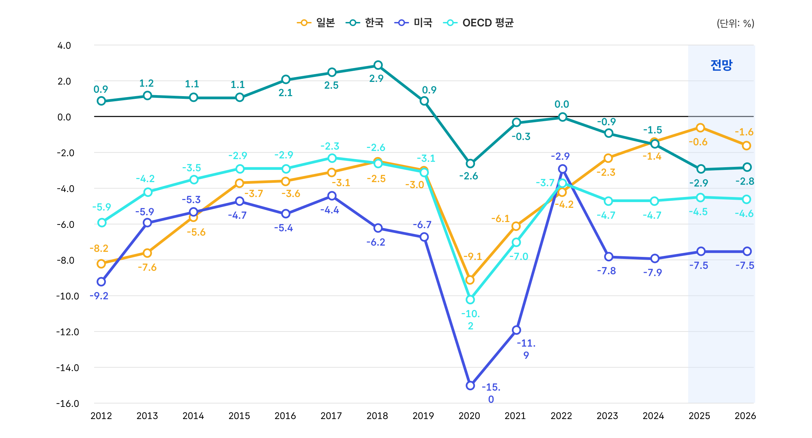

재정수지와 국가채무
1. 재정수지의 의의
재정수지는 해당 연도에 정부가 확보한 재정수입에서 재정지출을 차감한 결과를 말하며, 그 해의 재정운용이 적자였는지, 흑자였는지를 보여 주는 지표입니다.
재정수입보다 재정지출이 크면 재정수지 적자가 발생하고, 이를 메우기 위해 국채 발행, 차입, 자산 매각 등이 필요해져 국가채무가 증가하거나 국가자산이 감소하게 됩니다.
반대로 재정수입이 재정지출보다 크면 재정수지 흑자가 발생하여 국채 상환이나 예치금 확충 등에 활용되며, 국가채무는 줄고 국가자산은 늘어나는 방향으로 작용합니다.
한편, 재정수지는 “올해 나라 살림이 남았나, 모자랐나”를 보여 줄 뿐만 아니라, 그 결과가 쌓여서 미래의 빚과 저축이 어떻게 변할지까지 연결되는 지표입니다.
그래서 정부가 “현재의 안정”과 “미래의 부담” 사이에서 균형을 잘 맞추고 있는지 판단하는 준거가 되기도 합니다. 동시에 경기상황에 따른 정부의 대응방식을 보여주기도 합니다.
정부는 경기 침체기에는 일부러 적자를 늘려 일자리·소득·사회안전망을 뒷받침하고, 경기가 좋을 때에는 흑자를 통해 다시 저축을 늘리고 빚을 갚아 다음 위기를 대비하기 때문입니다.
아울러 재정수지는 국가 신용도와 금융시장 신뢰에 영향을 미쳐, 국채 이자 부담과 환율 안정성에도 직접적인 영향을 주는 중요한 신호입니다.
따라서 재정수지는 단순한 회계상의 숫자를 넘어서, 국가 재정이 장기적으로 지속 가능한 방식으로 운영되고 있는지 판단하는 중요한 잣대라고 할 수 있습니다.
2. 재정수지의 구분
재정수지는 분석 목적에 따라 여러 종류로 나뉘지만, 정부가 주로 사용하는 것은 통합재정수지와 관리재정수지입니다. 여기에 더해 기초재정수지, 경기조정 재정수지 같은 지표도 있어, 각각 보는 관점과 활용처가 조금씩 다릅니다.
우선 통합재정수지는 일반회계, 특별회계, 기금을 모두 포함해 나라 전체 재정의 수입과 지출 차이를 본 지표입니다. 회계 간 내부거래나 차입·채무상환 같은 단순한 자금이동은 빼고, 실제로 얼마나 벌고 얼마나 썼는지를 보여 줍니다.
다음으로 관리재정수지는 통합재정수지에서 사회보장성기금 수지를 뺀 지표로, 정부의 본원적인 재정상태를 더 엄밀하게 보여 줍니다. 연금 등으로 대표되는 사회보장성기금은 상당한 재정소요가 예상되는 영역으로 장기적으로 흑자와 적자가 시차를 두고 나타나는 구조입니다. 특히 우리나라의 사회보장성 기금은 ‘앞으로 나갈 돈을 미리 쌓아 두는 준비 단계’에 가까우므로, 현재의 흑자를 통합재정수지의 여유로 보는 것은 적절하지 않습니다. 즉, 관리재정수지는 ‘사회보장기금의 일시적(임시) 흑자를 빼고, 정부 재정의 체력을 따로 보는 보완 지표’라고 볼 수 있습니다.
한편, 통합재정수지와 관리재정수지만으로는 이자부담과 경기변동의 영향을 충분히 구분하기 어려워서 기초재정수지와 경기조정 재정수지를 함께 볼 필요가 있습니다. 기초재정수지는 이자지출을 제외하고 본 재정수지입니다. 즉, 국가가 기존 빚에 대해 내는 이자를 빼고 현재 재정운영이 얼마나 건전한지를 보는 지표입니다. 경기조정 재정수지는 경기 변동의 영향을 제거하고, 경기와 관계없는 ‘기초 체력’을 보려는 지표입니다. 경기가 좋을 때 세수가 늘고 지출이 줄어 재정이 좋아 보일 수 있지만, 이는 일시적일 수 있습니다. 그래서 경기조정 재정수지는 경기 사이클이 아니라 정부의 재량적 재정 정책이 경기상황에 적절했는지를 평가할 때 유용합니다.
3. 재정수지의 추이 및 전망
재정수지는 한 해 나라살림이 얼마나 남았는지, 아니면 얼마나 모자랐는지를 보여 주는 지표입니다.
2001년 정부가 관리재정수지 통계를 발표한 이후, 관리재정수지는 대체로 적자 기조를 보여 왔습니다. 실제로 집계 이래 흑자를 기록한 해는 2002~2003년과 2007년의 일부 기간뿐이며, 2008년 이후 결산 기준으로는 지속적인 적자가 이어지고 있습니다. 이는 일반회계를 중심으로 한 본원적 재정여건에 꾸준한 부담이 쌓여 왔다는 뜻이며, 경기 대응을 위한 지출 확대와 복지·사회보장 지출 증가가 함께 작용한 결과로 볼 수 있습니다. 반면 통합재정수지는 한동안 사회보장성기금의 흑자 덕분에 상대적으로 양호해 보였지만, 2019년 이후에는 적자가 지속되며 사회보장성기금 흑자에 가려져 있던 재정의 취약성이 지표에도 반영되기 시작했습니다.
앞으로는 고령화로 연금·의료 같은 지출이 계속 늘고, 경기 변동에 따라 세수도 흔들릴 수 있어 통합·관리재정수지 모두 적자폭이 커질 가능성이 있습니다.
그래서 정부는 중기 재정계획, 세입 확충, 지출 구조조정, 사회보장제도 개편 등을 통해 적자 확대를 줄이는 한편, 재정정책을 통해 경기를 살리고 민생과 성장 기반을 함께 뒷받침하기 위해 노력하고 있습니다. 따라서 앞으로의 재정수지는 ‘적자를 줄일 것인가’만의 문제가 아니라, 경기부양과 재정건전성 사이의 균형을 어떻게 잡을 것인가의 문제로 보아야 합니다.
정부가 지출 확대를 통해 경기 회복을 유도하더라도, 그 효과가 성장과 세수 확대로 이어지지 않으면 국가채무 부담은 더 빨리 커질 수 있기 때문입니다.
4. 재정수지 국제비교
재정수지의 국제비교는 한 나라의 재정이 다른 나라에 비해 얼마나 안정적인지, 또 앞으로 재정 부담을 얼마나 감당할 수 있는지를 보는 데 의미가 있습니다.
단순히 적자냐 흑자냐만 보는 것이 아니라, 각국의 고령화 정도, 복지 수준, 경기 상황, 사회보험제도 차이까지 함께 봐야 하므로, 국제비교는 ‘우리 재정의 상대적 위치’를 확인하는 참고 지표가 될 수 있습니다.
우리나라의 경우 OECD 기준 일반정부 재정수지가 주요 선진국보다 상대적으로 양호하게 나타나는 시기가 있었지만, 이것만으로 재정이 충분히 건전하다고 보기는 어렵습니다. 아직 사회보험 수급자가 본격적으로 늘지 않아 사회보장성기금이 흑자를 내는 구조가 반영되기 때문입니다.
주요 국가를 보면 고령화가 빨리 진행될수록 연금, 의료, 요양 같은 사회보장 지출이 함께 늘어나는 경향이 있습니다. 즉, 고령인구 비중이 높아질수록 정부가 감당해야 할 복지와 재정 부담도 커지며, 실제로 스웨덴·프랑스·영국·일본 같은 고령화 선진국들은 고령화가 진행될수록 공공지출이 증가하고 재정 여건이 악화되는 흐름을 보여 왔습니다.

주: OECD 평균은 OECD국가들에 대한 GDP 가중평균 기준
자료: OECD(2025. 12.), Economic Outlook, No.116